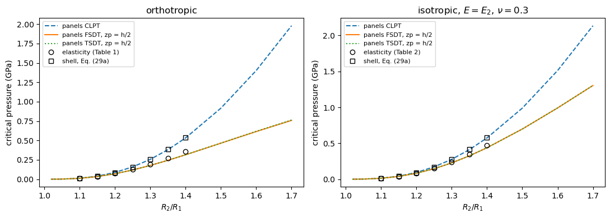

Thick orthotropic cylinders under external pressure: Kardomateas (1993)#
Kardomateas, Buckling of thick orthotropic cylindrical shells under external pressure, Journal of Applied Mechanics 60 (1993) 195-202.
Long (generalized plane deformation) orthotropic cylinders, inner radius \(R_1 = 1\) m, outer radius \(R_2\), \(h = R_2 - R_1\), mean radius \(R = (R_1 + R_2)/2\), under a uniform external hydrostatic pressure on the outer surface, buckling with \(n = 2\):
orthotropic material (Table 1, Figs. 2 and 5), 1 = r, 2 = \(\theta\), 3 = z: \(E_1 = E_3 = 14\), \(E_2 = 57\), \(G_{12} = G_{23} = 5.7\), \(G_{31} = 5.0\) GPa, \(\nu_{12} = 0.068\), \(\nu_{23} = 0.277\), \(\nu_{31} = 0.400\);
isotropic material with \(E = E_2 = 57\) GPa and \(\nu = 0.3\) (Table 2, Fig. 5);
references: the 3D elasticity solution and the classical shell formula, Eq. (29a), \(p_{cr} = E_2 (n^2 - 1) h^3/(12 (1 - \nu_{23}\nu_{32}) R^3)\), given as \(p_{cr} R_2^3/(E_2 h^3)\) for \(R_2/R_1\) = 1.10 to 1.40.
These are very thick rings, \(R/h\) = 10.5 to 3, where the shell theories are expected to fail. Eq. (29a) is the classical value with the follower (hydrostatic) load, \(3D/R^3\) with the plane-strain bending stiffness.
[1]:
%matplotlib inline
import os
import numpy as np
import matplotlib.pyplot as plt
from IPython.display import Markdown, display
import follower_utils as fu
from follower_utils import val, fmt, pct, markdown_table
# True runs panels again, otherwise the results saved in RESULTS are loaded
RERUN = True
RESULTS = 'results'
panels model#
A long cylinder under a uniform pressure buckles as a ring, in generalized plane strain, with the mode \(w = \cos(n\theta)\), \(n = 2\). The ring is modelled by val.ring_shell, a quarter of the circumference, \(b = \pi R/2\), of a cylindrical shell with Sanders’ kinematics:
symmetry planes at the straight edges, \(v = 0\) and \(w_{,y} = 0\) (and \(\phi_y = 0\) for the FSDT and TSDT), which contain the ring modes \(n = 2, 4, \ldots\);
symmetry planes at the ends, \(u = 0\), \(v_{,x} = w_{,x} = 0\), i.e. generalized plane strain;
4 terms along \(x\) and 15 along \(y\).
The pressure is a follower pressure, add_pressure_load(-1., follower=True, cte=False, zp=zp), with zp the position of the loaded surface: zp = h/2 places it on the outer surface, as in the elasticity solution, applied as \(p(1 + z_p/R)\) per unit mid-surface area (shallow shell). The prestress comes from a linear static analysis, and the critical pressure from val.ring_buckling_pressure:
c0 = solve(k0, s.calc_fext())
lb(k0, s.calc_kG(c=c0) + s.calc_kCfollower())
The fibres of the orthotropic material are along the hoop direction, i.e. plies at 90 deg, with laminaprop = (E11, E22, nu12, G12, G13, G23) = (E2, E3, nu23, G23, G12, G31) in the notation of the reference (1 = r, 2 = \(\theta\), 3 = z): \(G_{13}\) of the ply, the transverse shear stiffness A44 of the ring, is the \(r\theta\) modulus \(G_{12}\) of the reference.
[2]:
RATIOS = [1.02, 1.05, 1.10, 1.15, 1.20, 1.25, 1.30, 1.35, 1.40, 1.50, 1.60, 1.70]
def compute():
res = {}
for kind in ('ortho', 'iso'):
for ratio in RATIOS:
out = {}
for model in ('cylshell_clpt_sanders', 'cylshell_fsdt_sanders', 'cylshell_tsdt_sanders'):
for zp in (0., 0.5):
s, p = val.kardomateas1993_ring(kind, ratio, model=model, zp=zp)
out['%s, zp = %.1f h' % (model.split('_')[1], zp)] = p
res['%s %.2f' % (kind, ratio)] = out
return res
res = fu.run_or_load(os.path.join(RESULTS, 'kardomateas1993_thick_rings.json'), compute, rerun=RERUN)
computed in 11 s, saved to results/kardomateas1993_thick_rings.json
Tables 1 and 2#
\(p_{cr} R_2^3/(E_2 h^3)\), differences to the elasticity solution in parentheses. CLPT is compared with Eq. (29a), the shell column of the paper.
[3]:
for kind, title in (('ortho', 'Table 1, orthotropic'), ('iso', 'Table 2, isotropic')):
rows = []
for ratio, elast, shell in val.KARD1993[kind]:
r = res['%s %.2f' % (kind, ratio)]
rows.append(['%.2f' % ratio, '%.4f' % elast, '%.4f (%+.1f%%)' % (shell, pct(shell, elast)),
'%.4f (%+.2f%% vs Eq. 29a)' % (r['clpt, zp = 0.0 h'], pct(r['clpt, zp = 0.0 h'], shell))]
+ ['%.4f (%+.1f%%)' % (r[m], pct(r[m], elast)) for m in
('fsdt, zp = 0.0 h', 'fsdt, zp = 0.5 h', 'tsdt, zp = 0.5 h')])
display(Markdown('**%s**' % title))
display(Markdown(markdown_table(['$R_2/R_1$', 'elasticity', 'shell, Eq. (29a)', 'panels CLPT',
'panels FSDT', 'panels FSDT, zp = h/2', 'panels TSDT, zp = h/2'], rows)))
Table 1, orthotropic
\(R_2/R_1\) |
elasticity |
shell, Eq. (29a) |
panels CLPT |
panels FSDT |
panels FSDT, zp = h/2 |
panels TSDT, zp = h/2 |
|---|---|---|---|---|---|---|
1.10 |
0.2728 |
0.2930 (+7.4%) |
0.2927 (-0.09% vs Eq. 29a) |
0.2823 (+3.5%) |
0.2695 (-1.2%) |
0.2695 (-1.2%) |
1.15 |
0.2768 |
0.3119 (+12.7%) |
0.3114 (-0.15% vs Eq. 29a) |
0.2886 (+4.3%) |
0.2697 (-2.5%) |
0.2698 (-2.5%) |
1.20 |
0.2784 |
0.3308 (+18.8%) |
0.3299 (-0.27% vs Eq. 29a) |
0.2908 (+4.5%) |
0.2666 (-4.2%) |
0.2666 (-4.2%) |
1.25 |
0.2780 |
0.3495 (+25.7%) |
0.3481 (-0.40% vs Eq. 29a) |
0.2900 (+4.3%) |
0.2610 (-6.1%) |
0.2611 (-6.1%) |
1.30 |
0.2762 |
0.3681 (+33.3%) |
0.3660 (-0.57% vs Eq. 29a) |
0.2869 (+3.9%) |
0.2538 (-8.1%) |
0.2539 (-8.1%) |
1.35 |
0.2733 |
0.3864 (+41.4%) |
0.3836 (-0.72% vs Eq. 29a) |
0.2823 (+3.3%) |
0.2457 (-10.1%) |
0.2459 (-10.0%) |
1.40 |
0.2696 |
0.4046 (+50.1%) |
0.4009 (-0.91% vs Eq. 29a) |
0.2767 (+2.6%) |
0.2372 (-12.0%) |
0.2376 (-11.9%) |
Table 2, isotropic
\(R_2/R_1\) |
elasticity |
shell, Eq. (29a) |
panels CLPT |
panels FSDT |
panels FSDT, zp = h/2 |
panels TSDT, zp = h/2 |
|---|---|---|---|---|---|---|
1.10 |
0.2999 |
0.3159 (+5.3%) |
0.3156 (-0.08% vs Eq. 29a) |
0.3124 (+4.2%) |
0.2982 (-0.6%) |
0.2982 (-0.6%) |
1.15 |
0.3109 |
0.3363 (+8.2%) |
0.3358 (-0.15% vs Eq. 29a) |
0.3285 (+5.7%) |
0.3071 (-1.2%) |
0.3071 (-1.2%) |
1.20 |
0.3209 |
0.3567 (+11.2%) |
0.3557 (-0.28% vs Eq. 29a) |
0.3428 (+6.8%) |
0.3142 (-2.1%) |
0.3142 (-2.1%) |
1.25 |
0.3301 |
0.3769 (+14.2%) |
0.3753 (-0.42% vs Eq. 29a) |
0.3553 (+7.6%) |
0.3198 (-3.1%) |
0.3198 (-3.1%) |
1.30 |
0.3384 |
0.3969 (+17.3%) |
0.3946 (-0.57% vs Eq. 29a) |
0.3663 (+8.2%) |
0.3240 (-4.2%) |
0.3240 (-4.2%) |
1.35 |
0.3459 |
0.4167 (+20.5%) |
0.4136 (-0.74% vs Eq. 29a) |
0.3758 (+8.6%) |
0.3271 (-5.4%) |
0.3271 (-5.4%) |
1.40 |
0.3528 |
0.4363 (+23.7%) |
0.4323 (-0.93% vs Eq. 29a) |
0.3839 (+8.8%) |
0.3291 (-6.7%) |
0.3292 (-6.7%) |
Figures 2 and 5#
Critical pressure against \(R_2/R_1\), with the values of the tables of the paper as markers.
[4]:
E2 = 57.e9
fig, axes = plt.subplots(1, 2, figsize=(11, 4))
for ax, kind in zip(axes, ('ortho', 'iso')):
rr = np.array(RATIOS)
h = rr - 1.
norm = E2*h**3/rr**3/1e9
for label, key, st in (('panels CLPT', 'clpt, zp = 0.0 h', dict(ls='--')),
('panels FSDT, zp = h/2', 'fsdt, zp = 0.5 h', dict()),
('panels TSDT, zp = h/2', 'tsdt, zp = 0.5 h', dict(ls=':'))):
ax.plot(rr, [res['%s %.2f' % (kind, r)][key]*n for r, n in zip(RATIOS, norm)], label=label, **st)
t = np.array(val.KARD1993[kind])
nt = E2*(t[:, 0] - 1)**3/t[:, 0]**3/1e9
ax.plot(t[:, 0], t[:, 1]*nt, 'ko', mfc='none', label='elasticity (Table %d)' % (1 if kind == 'ortho' else 2))
ax.plot(t[:, 0], t[:, 2]*nt, 'ks', mfc='none', label='shell, Eq. (29a)')
ax.set_xlabel('$R_2/R_1$')
ax.set_ylabel('critical pressure (GPa)')
ax.set_title('orthotropic' if kind == 'ortho' else 'isotropic, $E = E_2$, $\\nu = 0.3$')
ax.legend(fontsize=8)
plt.tight_layout()

Discussion#
Shell formula. The CLPT ring with the follower pressure is 0.1% to 0.9% below Eq. (29a) for \(R_2/R_1\) = 1.10 to 1.40, the extensibility of the ring, of relative order \(h^2/(12R^2)\), which Eq. (29a) neglects: panels reproduces the classical hydrostatic value \(3D/R^3\) with the plane-strain bending stiffness.
Elasticity. The classical theory overestimates the elasticity value by 7% to 50% (orthotropic) and 5% to 24% (isotropic). The FSDT and the TSDT of panels, which account for the transverse shear, with the pressure on the outer surface, are 1.2% (orthotropic) and 0.6% (isotropic) below the elasticity value for \(R_2/R_1 = 1.1\), \(R/h = 10.5\), and the difference grows with the thickness, to 12% and 7% for \(R_2/R_1 = 1.4\), \(R/h = 3\). In this range the transverse normal strain, the variation of the prestress through the thickness, which is the reason of the maximum of \(p_{cr} R_2^3/(E_2 h^3)\) of the elasticity solution, and the shallow-shell approximation of the load surface, of relative order \(n^2 h/(2R)\), are significant; with the pressure on the mid-surface the FSDT overestimates the elasticity solution instead.